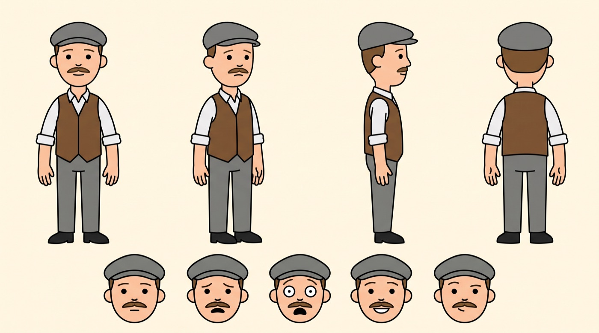
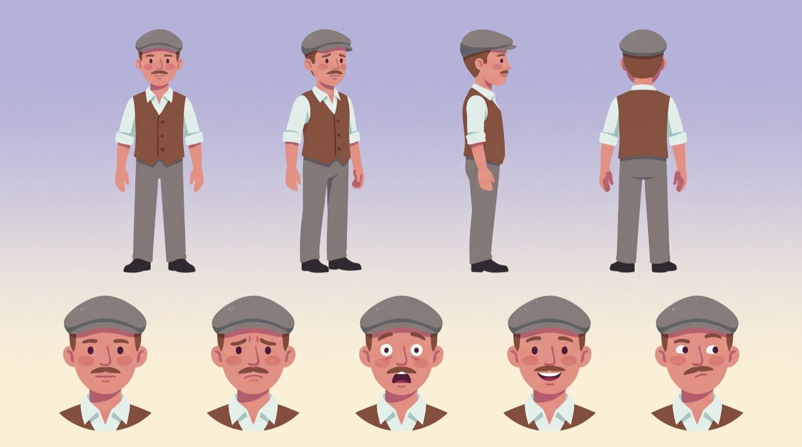

01
Estudiar la referencia
Medí 2 minutos del canal: planos, cada cuánto cambia la imagen, cada cuánto aparece una cifra. Sacá el estilo y la paleta de capturas reales.
Error realLa IA describió un «contorno negro» que no existía. Perdimos un día.
SEN6 · Herramientas
Todo lo que necesitás para hacer un canal de infografía animada, paso a paso.
Para Claude Code:
te guía paso a paso
02 · El método
Es el mismo orden que sigue la skill. Donde nos equivocamos, te dejamos el error real para que no lo repitas.
Medí 2 minutos del canal: planos, cada cuánto cambia la imagen, cada cuánto aparece una cifra. Sacá el estilo y la paleta de capturas reales.
Copiá la estructura, nunca el texto: 5 tiempos, unas 300 palabras para 2 minutos, cada cifra con su fuente.
ElevenLabs o tu voz clonada (Qwen3-TTS, gratis). Medí el ritmo: la meta es ~150 palabras por minuto.
Una idea cada ~5 segundos: qué se dice, qué se ve, movimiento de cámara y cifra en pantalla. 2 minutos son 20-22 ideas.
Hoja de personaje con Nano Banana Pro (captura del canal como referencia de estilo) o marioneta articulada en código.
Una imagen por idea, con las dos referencias. Mapas siempre en código, nunca con IA. Nada de números ni texto dentro de la imagen.
Kling 3.0 con primer frame (movimiento de cámara + gesto chico) o todo en código con Remotion.
Corte seco. Las cifras van como texto, justo cuando la voz dice el número. Música baja y mezcla a −14 LUFS.
03 · Herramienta
Subí de 1 a 5 capturas del canal (Cmd+Shift+4). Se procesan en tu navegador: no se sube nada a ningún lado.
Tip: usá cuadros con personajes y fondos, no la miniatura (tiene texto encima que ensucia la paleta).
04 · Herramienta
Pegá tu guion. Si ya tenés la locución, poné cuánto dura. La meta es ~150 palabras por minuto, como el canal original.
05 · Herramienta
Corta tu guion en ideas de ~5 segundos (12-13 palabras a 150/min). Completá qué se ve y el movimiento de cada una. Se guarda solo en este navegador.
06 · Constructor
Completá los campos y copiá. Lo que cambia según tu video aparece resaltado en naranja.
Elegí temas con números grandes: son el combustible del formato. Pegalo en Claude o ChatGPT con búsqueda web activada.
Subí como imagen 1 una captura real del canal. Si la hoja sale con contorno o con otro estilo, rehacela.
Escribilo en inglés o traducilo antes de pegar: la imagen sale mejor.
Primer frame = la imagen de la escena · 5 s · sin sonido. Gestos chicos: los grandes deforman.
07 · Comparación
El mismo guion de 2 minutos, animado de tres maneras. Miralos y elegí la tuya.
Contorno negro y cabeza de muñeco: el método estaba bien, el estilo no.
US$ 0
22 escenas con primer frame y prompt de animación cut-out.
~US$ 8,50 cada 2 min
Formas toscas, sin contorno, marioneta articulada y cámara con parallax.
US$ 0
El verde se come los billetes, la bandera y la ropa. Si tu escena tiene verde, el recorte la rompe.
08 · Bitácora
Los dos que más nos costaron, con el arreglo. Están en la skill para que no los pagues vos.

V1 · con contorno
V3 · aprobadaLa IA que miró el video dijo «contorno negro». Los cuadros reales no tenían ningún contorno: formas separadas por color y una sombra plana por forma.
ArregloEl estilo se saca de capturas reales, nunca de una descripción. Pasá la captura como «ONLY an art style reference».
Le pedimos a Kling «encogerse de hombros con las palmas abiertas». Resultado: un tercer brazo.
ArregloGesto chico + «exactly two arms and two hands».
Voz muy rápida. Qwen habló a 210/min. Medilo siempre con el medidor de ritmo.
La taza boca abajo. Lo que el personaje tiene en la mano gira con el brazo: contra-rotalo.
«Sin créditos» con saldo. Los trabajos en curso reservan créditos. Esperá y reenviá.
09 · Ruta en código
Como en After Effects: cada pieza es un dibujo plano que gira sobre su articulación. No se redibuja nada, se mueve.
10 · Antes de subir
Marcá cada punto cuando lo tengas. Queda guardado en este navegador.